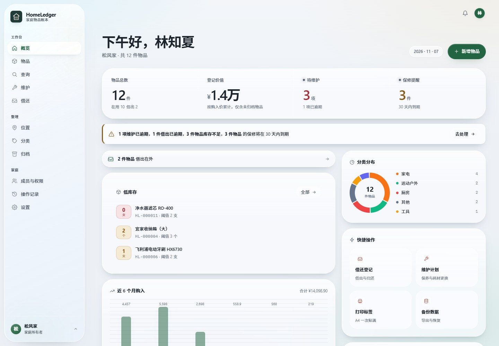
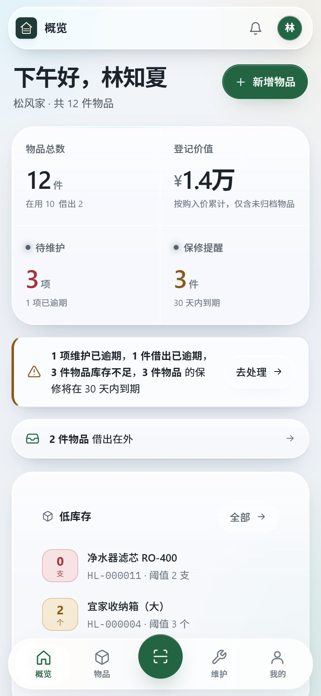
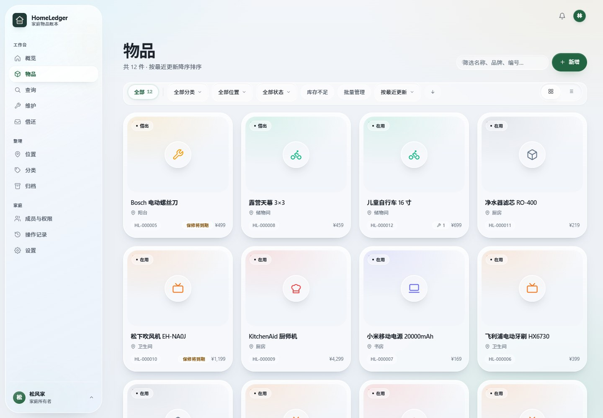
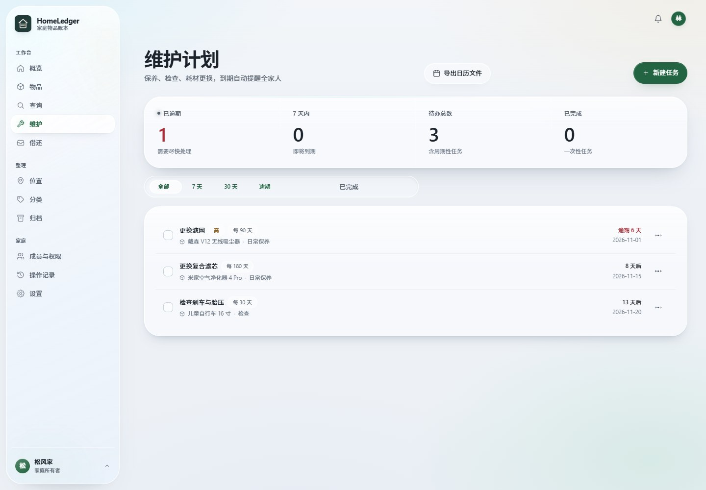
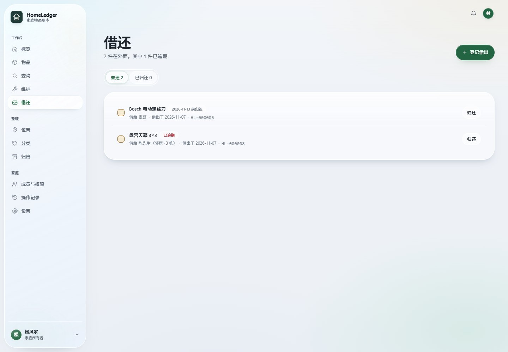
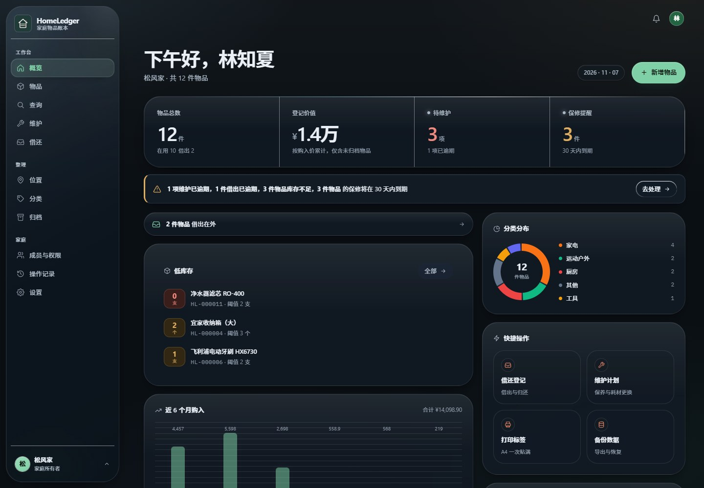
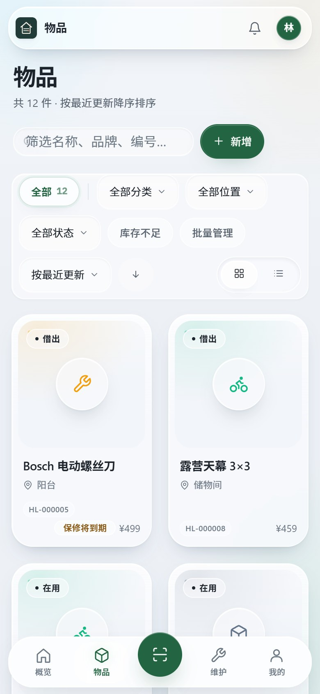

不是表格
表格能记数量，记不住位置、保修、借给谁、什么时候该换滤芯。HomeLedger 把这些关系放进同一个档案，而不是让你自己拼公式。
本地优先的家庭物品台账
从购入、存放、保修、维护，到借出、归还、批次到期——一本随时查得到的账。数据留在你的设备上，断网也能用。
Windows · Android · Web/PWA 个人与家庭非商业使用免费


桌面端概览 · 晨雾主题
01 / 为什么
表格能记数量，记不住位置、保修、借给谁、什么时候该换滤芯。HomeLedger 把这些关系放进同一个档案，而不是让你自己拼公式。
数据默认在本机；要共享时才同步，私密字段和照片在离开设备前加密。服务器可以自建，也可以不用。
源码公开，数据格式、权限和同步协议都能查。你不需要只凭一句“我们很安全”来决定把家里的清单交给谁。
02 / 功能
从“买回来”到“送出去”，中间的位置、保修、维护、借还和批次都在同一条时间线上。需要的时候查得到，不需要的时候不打扰。
编号、型号条码、序列号分开记；数量、成色、状态、购置与保修、自定义字段都在一张档案里。
房间 → 家具 → 容器 → 区域，四级位置树；分类同样成树，数量向上汇总，防止循环引用。
周期任务完成后自动顺延，一次性任务结案；逾期和临近分开筛选，花费与记录进入物品时间线。
谁借走了、什么时候还、是否逾期；同一物品分批次记录生产日、到期日和自己的存放位置。
单件二维码、贴纸 PNG、A4 三列和批量 ZIP。手机相机扫码打开只读页，不用装 App。
5 个角色、23 项权限、成员级覆盖和物品级共享。所有写操作落审计，谁改了什么能查。
Argon2id 派生密钥，每家庭一把 DEK，字段与附件用 AES-256-GCM。服务器读不到私密内容。
在线一致性快照，恢复前自动留底；CSV / JSON 全量导出。数据是你的，随时能带走。
03 / 界面
界面按“档案”而不是“后台管理”来组织：列表、状态、时间和关系放在一起。亮色和暗色都做了，手机端不是缩小的桌面版。





截图使用演示家庭与演示物品；安装包不内置演示账号或示例数据。
04 / 隐私
本地优先不是一句口号：默认不连服务器，不注册也能用。只有你主动打开同步，数据才会离开设备，而且私密字段在离开前就已加密。
同步数据流
05 / 部署
不一定要有云服务器。只给自己用，开箱就是本机模式；一家人共享，把它跑在家里的网关上；异地访问，再上云或走 VPN。
| 能力 | 本地单机 | 家庭网关 推荐 | 云服务器 |
|---|---|---|---|
| 多成员 | — | ✓ | ✓ |
| 局域网访问 | — | ✓ | ✓ |
| 外网访问 | — | 需 VPN / 反代 | ✓ |
| 定时任务 | — | ✓ | ✓ |
| 对象存储 | — | — | ✓ S3 兼容 |
| 适合 | 个人、隐私优先 | 家庭首选 | 异地家庭 |
网关模式下，所有终端必须通过 API 访问。不要用 SMB/NFS 把同一个 SQLite 文件共享给多台设备直接写入——跨网络文件系统的锁不可靠，会造成静默损坏。
没有服务器也能共享。桌面端在“设置 → 同步”里点一次“允许家庭内设备连接”，它就开始在局域网提供登录页，手机填上显示的地址即可。默认关闭。
06 / 下载
最新版 2.0.2-beta · 2026-11-08
Windows 安装包使用固定自签名证书，SmartScreen 提示“未知发布者”属预期；Android 使用固定 release key，可覆盖同签名版本。
查看完整版本说明07 / 许可
HomeLedger 是 source-available，不是 OSI 开源。源码公开，个人和家庭可以免费使用；商业使用需要单独取得书面授权。
非商业
安装、使用、修改和分发都允许，前提是保留许可证、NOTICE 和版权声明。学习、研究与非营利组织内部使用，只要不主要指向商业利益，也属于非商业用途。
阅读 PolyForm 许可证商业
在公司或组织内部用于经营、生产、资产管理、客户交付，以及付费托管、SaaS、代部署、培训、咨询和 OEM，都需要事先取得书面商业授权。
商业授权说明补充条款见 EULA；如与 LICENSE 冲突，以 LICENSE 为准。第三方组件按其各自许可证授权。本项目按“现状”提供，不附带担保。
08 / 常见问题
没有回答到的，去 GitHub Issues 问；安全漏洞请走私密公告。
%APPDATA%\HomeLedger；WebView 的 IndexedDB 在 %LOCALAPPDATA%\app.homeledger.desktop\EBWebView。Android 在应用私有沙箱，卸载即删除。完整路径见隐私说明。